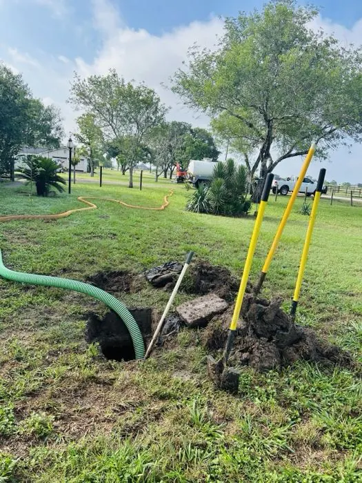
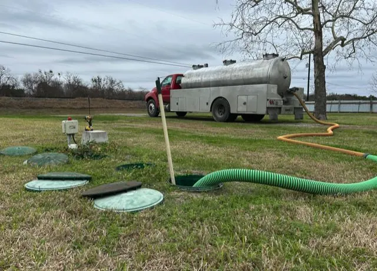
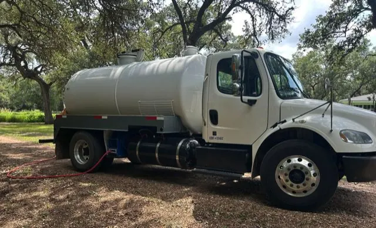
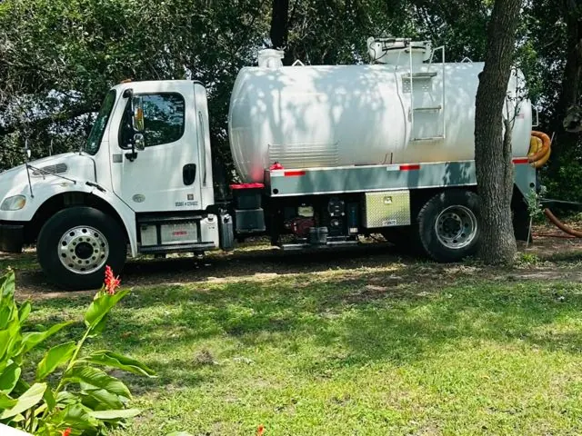

5.0
★★★★★
Average across 76 Google reviews from Victoria and the surrounding counties.

Victoria, TX septic tank pumpers — every chamber, every lid, solids off the bottom. A real price over the phone before the truck rolls. Family owned since 2019.
Tell us your town and tank size — you'll have a price in a couple of minutes, and usually a truck the same day.
Plenty of tanks get skimmed — the liquid comes off the top, the truck leaves, and the sludge that caused the problem is still sitting on the bottom. A few months later you're backing up again.
We open every lid the system has, take the tank down to the floor and clean the walls on the way. That's the whole point of the job, and it's why people call us back three years later instead of a month later.

Two trucks, one job done properly. Residential is most of what we do, but if it's a tank that holds waste, we can empty it.
Routine maintenance or an emergency at the house — same truck, same standard, usually the same day you call.
Spray systems and secondary treatment tanks. We pump every chamber the system has, not just the one with the easy lid.
Standard tank and drain field setups — the kind on most older places out in the county.
Holding tanks, shops, offices, rural businesses and rental property. Tell us the tank size and we'll bring the right truck.
We pump tanks — we don't repair or install septic systems, replace pumps or floats, or hold aerobic maintenance contracts. If your problem turns out to be a failed part or a broken line, we'll tell you on the phone instead of charging you for a trip out. (A tank usually has to be pumped before anyone can repair it anyway.)
Tell us where you are, roughly what size tank you've got and what it's doing. You'll get a price and an honest answer on timing.
We locate the tank, open every lid and vacuum it out completely — solids off the bottom, not just liquid off the top.
Lids seated, ground raked over, hoses off your grass. We don't leave a mess for you to deal with.
The fastest way is to call — Matt quotes over the phone, and if it's backing up he'll tell you what today looks like. Or send him an email and he'll reply with a price.
Mon–Fri 8am–5pm. Backed up after hours? Call anyway — it reaches Matt directly.
Rather not call? Email Matt and he'll reply with a price.
layne@onepumpseptic.comInclude your town and tank size if you know it — that's all Matt needs to quote.
Heads up: we pump and clean tanks only — no repairs or installs. If it turns out to be a repair, the tank still has to be pumped first, and we'll tell you straight what we're seeing.
No stock photos. These are OnePump trucks on customers' properties.




Some of these name Layne — Matt's father, who started OnePump and handed it on. Matt runs it now, with the same trucks and the same number.
Average across 76 Google reviews from Victoria and the surrounding counties.
"Could not have asked for better service from these folks. I was in need of an emergency septic service and they got here quickly and took care of the job in no time at all. They made very clean work of a dirty job and didn't leave any mess behind. I would recommend these guys to anyone!"
"Layne and his son did a great job! He showed up on time, was very courteous, and went above and beyond to make sure we were well taken care of. Very reasonable, too. I wholeheartedly recommend OnePump and will certainly call again when the need arises."
"Great job! We just bought this house and it's our first septic system. We wanted a little bit of education and to make sure all of the previous owner's 'stuff' was out of the house (inside AND out). They came out early the day after we called (non-emergency), arrived when they said they would, and took the time to explain all of the bells and whistles. Great people and a great family business that didn't charge an arm and a leg. Would highly recommend!!"
"Extremely knowledgeable, very friendly and courteous. Layne was prompt (same day) and did a very thorough job. Would recommend his service to anyone!"
"This family run business was great. Made it out really fast. Got me ready for the plumber. Was really friendly, and even told me what he thought was wrong, to give the plumber a place to start. Would highly recommend this business."
We're based on Boehm Road in Victoria and we'll run 60 to 70 miles to reach a tank. Closer to home is easier, but if your town is on this list, we come to you. Near the edge of the map? Call anyway — if we can't get to you we'll say so quickly.
Most days, yes — it's the question we get more than any other. Call as early as you can and we'll do our best to get you taken care of right away. If we genuinely can't reach you today we'll tell you on the phone rather than leave you waiting.
It depends on the size of your tank and how far out you are, so we quote each job over the phone rather than posting a number that turns out to be wrong. Estimates are free, the figure you're given is the figure you pay, and there's nothing added afterwards.
For most households it's every three to five years, depending on tank size and how many people are in the house. If you're getting slow drains, gurgling, odor or wet patches over the drain field, don't wait for the calendar.
Yes — aerobic and conventional both. Aerobic systems have more than one chamber, and we pump all of them. Note that aerobic systems also need a maintenance contract with a licensed maintenance provider under TCEQ rules; that's a separate service from pumping and not something we handle.
No. We pump tanks and that's it — no repairs, no installs, no part replacement. If your problem turns out to be a failed pump or a broken line, we'll tell you straight so you can get the right person out instead of paying us for a wasted trip.
It helps and can save time, but it isn't required. If you know roughly where the lids are, tell us on the phone. If you've no idea, say so — that's normal, especially on a place you've recently bought.
Yes. OnePump is licensed by the TCEQ to transport sludge (license #25629) and carries liability insurance. Family owned and operated out of Victoria since 2019.
Tell us your town and your tank size and you'll have a price in a couple of minutes. Usually a truck the same day you call.